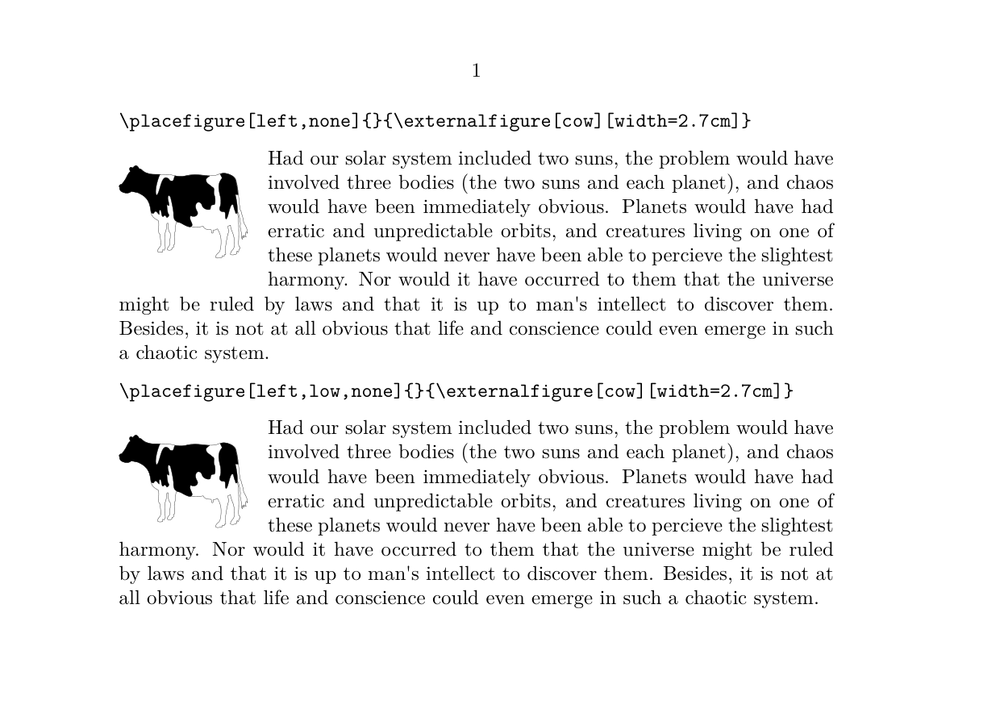

Contents
Summary
The command \placefloat is the basis for all float placement commands like \placefigure, \placetable etc.
Settings
| \placefloat[...][...,...][...,...]{...}{...} | |
| [...] | singular |
| [...,...] | split always left right inner outer backspace cutspace inleft inright inmargin leftmargin rightmargin leftedge rightedge innermargin outermargin inneredge outeredge text opposite reset height depth [+-]line halfline grid high low fit 90 180 270 nonumber none local here force margin [+-]hang hanging tall both middle offset top bottom auto page leftpage rightpage somewhere effective header footer tblr lrtb tbrl rltb fxtb btlr lrbt btrl rlbt fxbt fixd |
| [...,...] | reference |
| {...} | text |
| {...} | content |
| Option | Explanation |
|---|---|
| name of the float class, e.g. figure, table | |
optional positioning key. There are a great many positioning keys defined, and they can be combined (although not all combinations make sense).
New in 2024-06: paragraph, to be combined with left/right to avoid problems with other mechanisms that affect the paragraph shape, like initials. (hangindent vs. parshape) |
|
| split | If a table is too long for the page, and split has been specified, then the table will be split over as many pages as are required.
See the command \setupfloatsplitting for options specific to the split. You can’t combinesplit with other options (like here, top, page), it alone is like here. If you need page, surround the placement with \startpostponing … \stoppostponing. |
| always | with bottom: ensure bottom placement, don’t allow top placement |
| left | To the left of the text (sidefloat) |
| right | To the right of the text (sidefloat) |
| inner | like left/right (sidefloat) |
| outer | like left/right (sidefloat) |
| backspace | ? |
| cutspace | ? |
| inleft | In left margin (marginfloat) |
| inright | In right margin (marginfloat) |
| inmargin | In the margin (left or right) |
| leftmargin | In left margin (marginfloat) |
| rightmargin | In right margin (marginfloat) |
| leftedge | In left edge area (edgefloat) |
| rightedge | In right edge area (edgefloat) |
| innermargin | In inner margin (marginfloat) |
| outermargin | In outer margin (marginfloat) |
| inneredge | In inner edge area (edgefloat) |
| outeredge | In outer edge area (edgefloat) |
| text | In main text area |
| opposite | On the opposite page of a spread (pagefloat) |
| reset | with sidefloats: caption is overwritten by following text (overlay) |
| height | Align sidefloat with font height (uppercase or ascenders), above the baseline, rather than aligning the top with a baseline. (= sidealign=height) |
| depth | Align sidefloat with font depth (descenders), below the baseline. (= sidealign=depth) |
| [+-]line | +n*line: shifts content n baselines further down, leaves blank space (consider "hang" instead to have following text fill the space above the content).
-n*line: shifts content n baselines further up, under the text line: (= sidealign=line), shift one baseline further up Both of these done without affecting hanging indentation for left or right. |
| halfline | Moves content up roughly 1/2 line, unless "height" is used, in which case content is moved down roughly 1/2 line; (= sidealign=halfline) |
| grid | ? |
| high | top align pagefloats, move sidefloats higher |
| low | bottom align pagefloats. For sidefloats, this can remove extra space between the bottom of the float and the following text. |
| fit | with sidefloats: no distance between float and text |
| 90 | pagefloats: rotation of float and caption |
| 180 | pagefloats: rotation of float and caption (works with other floats, but alignment is unreliable) |
| 270 | pagefloats: rotation of float and caption |
| nonumber | suppress the float number |
| none | suppress the caption, including the "FLOAT 1" label. |
| local | ? |
| here | preferably here |
| force | force placement here (don’t combine with "here") |
| margin | in the margin (marginfloat) |
| [+-]hang | move sidefloats vertically; like "[+-]line", but positive line values leave space above, while hang doesn’t. negative values move the float over the text. |
| hanging | ? apparently the same as 0*hang |
| tall | ? |
| both | ? |
| middle | ? |
| offset | ? |
| top | At the top of the page |
| bottom | At the bottom of the page (unreliable, can become top, consider "always") |
| auto | ? |
| page | On a new (empty) page (pagefloat) |
| leftpage | On an empty left page (pagefloat) |
| rightpage | On an empty right page (pagefloat) |
| somewhere | Used as a location prefix with \placenamedfloat. See that command page for example usage |
| effective | ? |
| header | Use header space (combine with "high"). Pagefloats: switch header lines off. |
| footer | Use footer space (combine with "low"). Pagefloats: switch footer lines off. |
| tblr | Precedence in page columns: top, bottom, left, right |
| lrtb | Precedence in page columns: left, right, top, bottom |
| tbrl | Precedence in page columns: top, bottom, right, left |
| rltb | Precedence in page columns: right, left, top, bottom |
| fxtb | Precedence in page columns: top bottom (?) |
| btlr | Precedence in page columns |
| lrbt | Precedence in page columns |
| btrl | Precedence in page columns |
| rlbt | Precedence in page columns |
| fxbt | Precedence in page columns: bottom top (?) |
| fixd | Precedence in page columns: force here (?) |
| optional reference label | |
| caption content | |
| {...} | float content |
Description
Examples
Demonstration of "low" option.
-
% Jim Diamond 2026-02-07 \setuppapersize[A5,landscape] \setupbodyfont[12pt] \starttext \type{\placefigure[left,none]{}{\externalfigure[cow][width=2.7cm]}} \blank \placefigure[left,none]{}{\externalfigure[cow][width=2.7cm]} \input thuan \blank \type{\placefigure[left,low,none]{}{\externalfigure[cow][width=2.7cm]}} \blank \placefigure[left,low,none]{}{\externalfigure[cow][width=2.7cm]} \input thuan \stoptext
-

Notes
See also
- strc-flt.mkvi
- Document layout and layers/Floating objects
- \definefloat
- \setupfloat
- \startplacefloat
- \setupfloatsplitting
- page-cst.lua Lua functions that control the four-letter placement codes in page columns